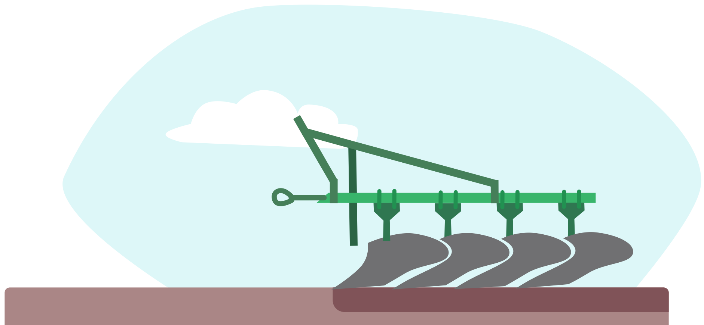
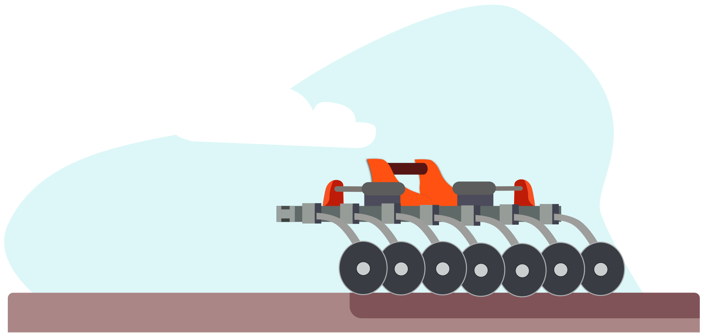

Оранка
Проведення повноцінної обробки поля з повним оборотом пласта. Поверхня ріллі стає повністю чистою, а рослинні рештки переміщуються на глибину до 30 см. Створюються оптимальні умови для одночасного проростання зерен за рахунок хорошого дренажу та розподілу в орному шарі мінеральних речовин.
Полицеві агрегати не тиснуть на грунт, а під час обробітку допускається внесення досить високих норм органічних та мінеральних добрив, оптимізується застосування та витрати хімічних ЗЗР. Недоліком вважається створення щільної грунтової підошви, через яку в нижні шари не може проникати волога. Там, де часто бувають пересихання та ерозії, використовувати таку систему не рекомендовано, а раз на 3-4 роки додатково необхідно проводити рихлення. Для оптимізації робіт аграрії використовують комбіновані ґрунтообробні агрегати.
Важкі зубові борони за один прохід можуть проводити одночасно декілька операцій – розпушування, боронування, вирівнювання, закриття вологи та підгодівлю. Використовуючи традиційну оранку варто враховувати, що регулярні глибокі обробки можуть знижувати родючість землі через мінералізацію гумусу.
Боронування (закриття вологи)
Ця операція необхідна для збереження вологи. Проте, надто раннє виконання робіт за надмірної вологості призведе до утворення грунтової кірки, а пізнє до значних втрат вологи.
Проводиться лише поверхнево дисковим обладнанням, а рослинні залишки рівномірно змішуються з землею на глибину до 18 см. Максимально структурується верхній пласт землі, в ньому накопичуються органічні домішки, гумус без втрати вологості й повітропроникності. Пришвидшується мінералізація органічних залишків.
Культивація
Шляхом культивації ділянку позбавляють від пророслих бур'янів та тих, які перезимували. Крім того прохід культиватором розпушує верхній шар на глибину загортання зерен. Одночасно проводять шлейфування для якісного проходу сівалки. Якщо в подальшому планується посів дрібного насіння, слід додатково провести коткування для рівномірної глибини загортання.
Внесення добрив
Забезпечуються рослинам поживні речовини, дозволять їм сформувати потужну кореневу систему.